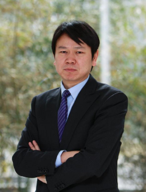

2015年夏，香港中文大学(深圳)与香港中文大学合作开办金融工程理学硕士项目。该项目是香港中文大学(深圳)设立的首批硕士课程之一。学生一旦达到毕业要求，将获发香港中文大学之硕士学位。
过去三十多年来，金融工程学在金融行业的创新与发展过程中起到了尤为重要的作用，极大地促进着许多发达国家的多元化经济发展。当前中国正在从以制造业为主的经济结构转型，尤其重视加强金融行业的建设，对具有卓越定量分析能力的从业人员的需求因而日益旺盛。与此同时，动荡的金融市场，特别是近些年来的几次重大金融危机，迫使金融行业各个层面的从业人员，从个人到政府，均面临着金融风险管理所带来的挑战。随着中国大陆经济结构的转型，国内的监管构架日益稳固有效，银行逐渐加强自主化运行，利率市场化刺激着债券市场的发展，在愈加有效的金融市场上，个人投资者将享受多样化的投资产品所带来的便利。在国际上，随着资本账户的逐渐开放，人民币日趋国际化，许多重大的国际资本正积极寻求参与中国未来发展所带来的投资机会。金融工程学科不仅帮助我们加深对于金融市场随机性的认识，而且其成功应用将使得投资者能够更加有效地进行风险管理以获得更好的回报。
香港中文大学及香港中文大学(深圳)都拥有着顶级的研究团队，金融工程学科的建设一直是两校区的重点发展领域。在与世界一流大学同步前进的同时，我们的金融工程硕士项目将是珠三角区域的开创者。我们将致力于培养金融工程领域所需的高级人才，服务于该地区乃至全国以及国际快速发展的金融市场。
我们金融工程硕士项目将结合香港中文大学及香港中文大学(深圳) 两个校区的教学力量。除此之外，我们的金融工程硕士项目将得益于其优异的地理位置－深圳。深圳作为中国大陆的两大金融中心之一，自改革开放以来，金融产业迅猛发展，对当今的广大学子而言充满机遇。
金融工程这一学科所涉及的知识是多方面的，它融合了金融理论、高等数学、建模、分析与优化，程序设计及其实现，产品开发等方面的知识和技术。香港中文大学金融工程硕士项目旨在向学生提供全面的金融理论知识，特别是定量分析方法在金融中的应用。本项目为立志投身于证券，银行，金融管理，管理与策略咨询，定量分析等行业的人员设立。该项目致力于帮助学生掌握金融理论，定量分析方法以及程序设计技术，使之在面临迅速发展的中国以及国际金融市场所带来的挑战时，能够发挥所学，服务企业与社会。
该项目要求学生在兩学年(含三个学期：秋季、春季、夏季)中修满30学分课程。课程设置旨在帮助学生学习掌握定量分析方法以及这些方法在建模分析金融市场和金融工具中的应用。必修课程包括：最优化理论、随机模型、投资科学、金融衍生产品、中国金融市场概论；选修课程则提供更为深入的金融工程理论与方法，主要包括两方面：高级方法（金融数据分析、金融工程中的计算方法）和特定专题（利率期限模型与固定收益证券、大宗商品市场、信用风险模型与产品、 算法交易）。除所教授课程之外，我们会邀请业界精英开设讲座，阐述课堂所学如何在金融行业中得到应用。除此之外，对金融工程学术领域感兴趣的学生亦可在任课教授的指导下进行相关研究。 该项目的学习年限最长三年。因此，学生将有更大的灵活性选择在学期间参与实习及其它研究。
我们有信心该金融工程硕士项目将会为学生提供一流的学习环境，使学生具有国际视野，成为行业翘楚。我们期待您的加入，并希望与您携手前进，共创辉煌。